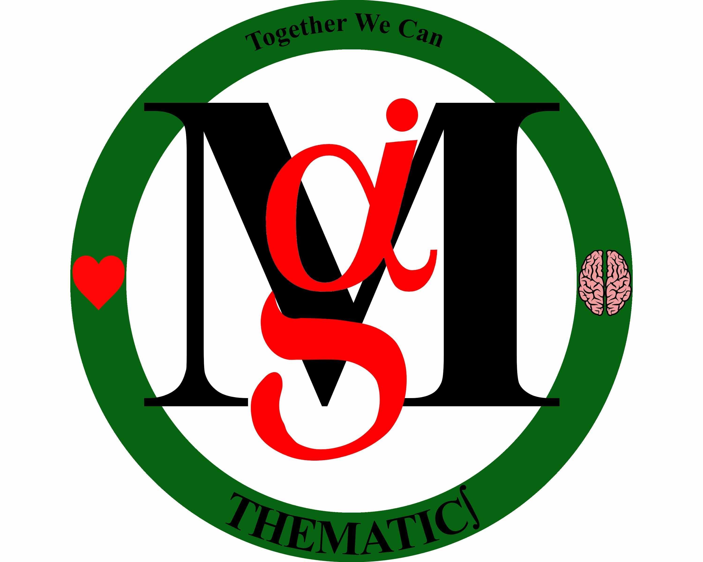

I'm Jacob (Maganizo) Kapita — call me "Maganizo" or "Maga" — a Ph.D. candidate in Mathematics at Louisiana State University, working on computational stochastic analysis, machine learning, and data science.

Ph.D. candidate in Mathematics, drawn to data-informed decisions, machine learning, and teaching — with a path here that ran through classrooms across East and Central Africa.
Ph.D. candidate in Mathematics at Louisiana State University, working in computational stochastic analysis with applications in data science and machine learning. My current research centers on learning the dynamics of stochastic reaction networks and Markov models from noisy, sparse event-time data — with an eye toward turning that kind of modeling into data-informed decisions.
Instructor of record for undergraduate mathematics at LSU, and research mentor guiding high school and undergraduate students through projects spanning Hidden Markov Models, Bayesian inference, and applied machine learning.
Years teaching mathematics across Malawi, Zambia, Zimbabwe, and Kenya, alongside degrees in theology and philosophy, came before graduate study in mathematics in the U.S. — a background that still shapes how I think about models, evidence, and people.
Open to conversations on stochastic modeling, machine learning research, or teaching, and exploring opportunities in both academia and industry data science.
My research is in computational stochastic analysis, focused on learning the dynamics of stochastic reaction networks and Markov models directly from noisy, sparse event-time data. I develop statistical and machine-learning methods for inferring reaction rates and model structure when only irregular observation times are available, with applications ranging from epidemiological modeling to biomedical and sensor-anomaly detection. This work sits at the intersection of stochastic processes, Bayesian inference, and applied machine learning.
Open to conversations on stochastic modeling, machine learning research collaborations, and academic or industry opportunities.
A space for anything else worth sharing — hobbies, favorite links, photos, notes.